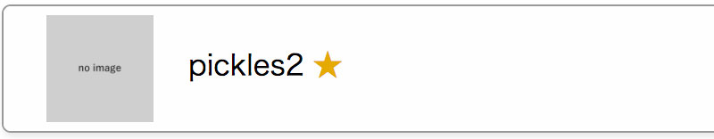
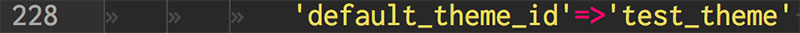
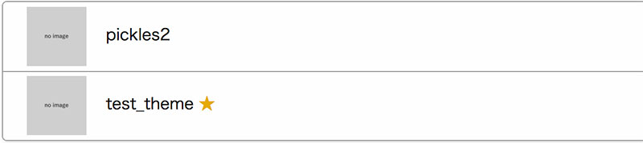

テーマは後述するいくつかのレイアウトの組み合わせで構成されています。テーマはプラグインの１つとしてPickles2に実装されており、初期状態では「pickles2」というテーマが1つだけ入っていますが、あとから自分で作ったテーマを追加したり削除することもできます。
テーマの右側についている☆マークは、現在そのテーマが選択されているという意味です。テーマを変更する場合には、少し面倒ですが以下の操作が必要となります。
⇒ pickles2ワークスペース ⇒ px-files ⇒ config.phpを開く
config.phpの228行目に「'default_theme_id'=>'pickles2'」と書かれていますが、「'pickles2'」の部分がテーマ名を指していますので、この部分を任意のテーマ名に変更することでテーマを変更することができます。
例えば「'default_theme_id'=>'test_theme'」に変更すると以下のように「'test_theme'」に変わることがわかります。
次のチャプターではテーマプラグインについてもう少し詳しく見ていきましょう。